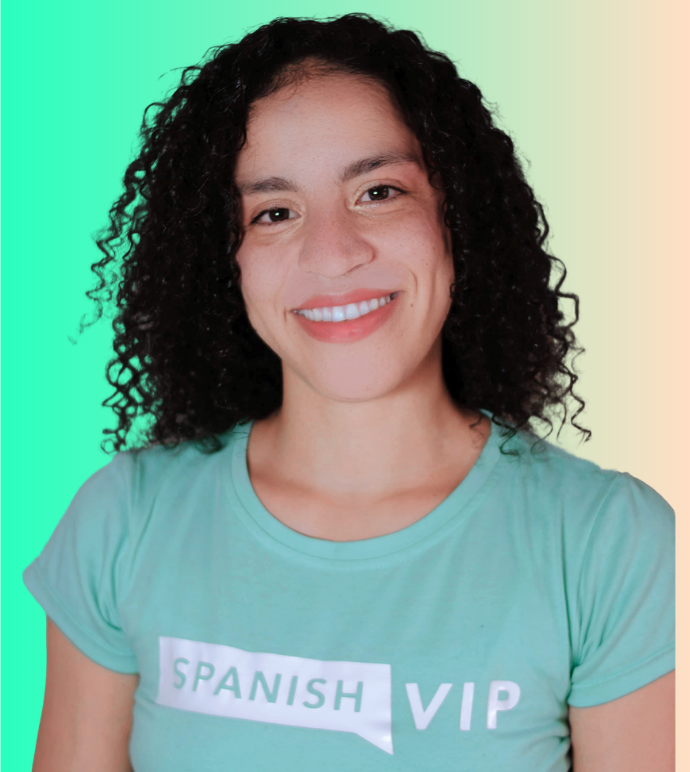

DDiego asked · A2 learner · 18 found this useful
¿Por qué se dice "estoy muerto de hambre"?
"My teacher keeps saying 'estoy muerta de hambre'. Literally, 'I'm dead of hunger.' Isn't that really dramatic?"

Gabriela answers · Native teacher, GuadalajaraIt's not dramatic at all. It just means "I'm starving." Spanish uses muerto de + feeling to say "extremely."
¡Estoy muerta de hambre!
I'm starving! (a woman speaking: muerta)
LITERALLY"dead of hunger"
REALLY MEANS"I'm starving"
Same pattern, other feelings
{{ o.es }}
{{ o.en }}
It's 2 p.m. and you skipped breakfast. You say…
Muerto/a de hambre is the everyday way. "Tengo mucha hambre" is fine too, just less vivid.
Questions learners ask
Muerto or muerta?+
Match the speaker: muerto for men, muerta for women, muertos for a group.
Is it OK at work?+
Yes. It's informal but not slang, so it's fine with coworkers.